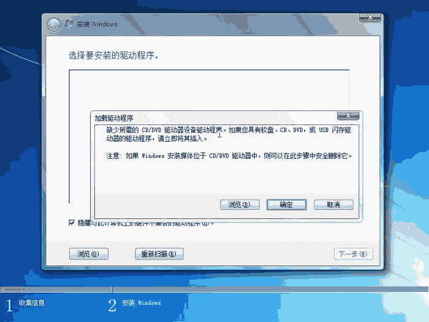
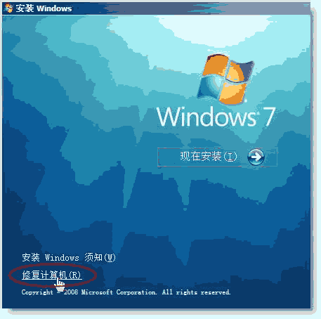
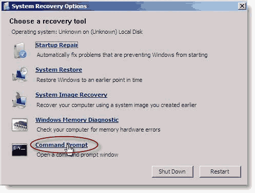
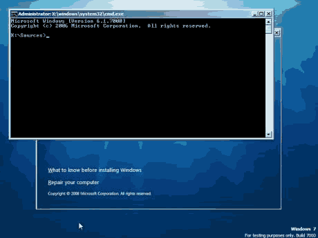

U盘安装容易出现缺少设置驱动问题，最大的可能是安装过程中U盘不能被识别。因为安装程序运行后机器的控制权就交到了安装程序，和BIOS和GRUB都没关系了，这也是启动时认U盘而安装时不认的原因。
例WIN7中：

解决方法：需要加载特定的U盘驱动，使Windows7安装程序能识别U盘分区。
如得到名为cfadisk.inf的驱动————只需要修改好驱动就行了，驱动安装将在Windows7安装过程中进行。
把驱动程序cfadisk.inf和cfadisk.sys复制到U盘第一分区随便哪里。
用U盘重新启动进入Windows7安装，选修复安装。



输入命令加载U盘驱动
cd f:\usbdrv （注意正确的驱动程序路径，比如我的是f盘usbdrv文件夹） drvload cfadisk.inf
提示重启，不要理它，拔/插U盘即可。（因为Windows7的安装程序是用ramdisk加载的，重启后就没了）
这时Windows7安装程序就能认识U盘的第二第三分区了。
继续在命令行输入命令，进入安装文件目录，运行setup.exe。
cd g:\sources （我的U盘第三分区此时是g盘） setup.exe
成功解决问题，这次Windows7安装不再出现问题画面，可以顺利继续了。
当然最好的方法还是自己做一个DOS引导镜像，把驱动的安装放到里面。
除这之外，还有许多其它问题，列出如下：